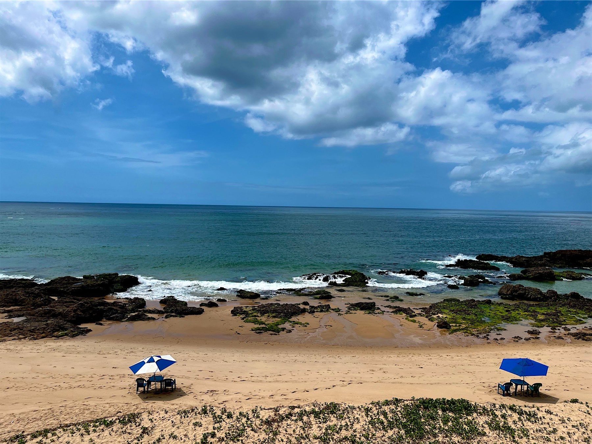

Salvador is the soul of Bahia. Founded in 1549 as Brazil’s first capital, it is the most African city in the Americas — you hear it in the drums of Olodum, taste it in acarajé fried in palm oil, and see it in the baroque churches and candy-colored mansions of the Pelourinho, a UNESCO World Heritage Site. Most U.S. visitors start their Bahia trip here.
- Pelourinho UNESCO center
- Daily street drummers
- Elevador Lacerda
- Bonfim ribbons
- Farol da Barra sunset
- Acarajé in Rio Vermelho
- Carnival
Why visit Salvador
Few cities pack this much into one walk. In a single afternoon you can ride the 1873 Elevador Lacerda between the Upper and Lower City, browse handicrafts at the Mercado Modelo, step inside the gold-leaf interior of the São Francisco church and watch capoeira on the Terreiro de Jesus. Evenings belong to live samba-reggae, sunset at Farol da Barra and moqueca in Rio Vermelho.

Top things to do
- Pelourinho (Centro Histórico): cobbled lanes, pastel façades, museums and Tuesday-night music. Go in daylight first to get your bearings.
- Elevador Lacerda & Mercado Modelo: a 30-second ride with one of the best views of the Bay of All Saints.
- Igreja de São Francisco: one of the most lavish baroque church interiors in Brazil.
- Igreja do Nosso Senhor do Bonfim: tie a colorful fita ribbon to the gate, make three wishes, and wear one on your wrist until it falls off.
- Street drummers: in Bahia there are drummers on the streets every day, and the performances are amazing — follow the sound.
- Farol da Barra at sunset: the lighthouse and fort at the tip of the peninsula — locals applaud as the sun drops into the bay.
- Rio Vermelho: the bohemian neighborhood for acarajé stands, bars and the Iemanjá festival every February 2.

Where to stay in Salvador
Barra is the easiest base for first-timers: walkable seafront, beaches, restaurants and quick rides to the historic center. Pelourinho / Santo Antônio Além do Carmo puts you inside the postcard in boutique hotels and pousadas — wonderful by day, best navigated by ride-hailing at night. Rio Vermelho suits food lovers and night owls. See our Salvador hotel guide.

Staying safe in Salvador
Salvador is a big city with real petty-crime issues, but millions of visitors enjoy it every year with a few habits: keep your phone out of sight on the street, leave jewelry at home, use Uber or 99 after dark instead of walking between neighborhoods, and stay on the busy, lit streets of the Pelourinho at night. Read the full Bahia safety guide.

Salvador in pictures





Salvador FAQ
How many days do you need in Salvador?
Three to four days covers the Pelourinho, Barra, Rio Vermelho, the Bonfim church and a day trip to the islands of the Bay of All Saints. Add a day if you want to see a capoeira class or a Candomblé-inspired dance show.
Is Salvador worth visiting for Americans?
Yes. Salvador is the cultural heart of Afro-Brazil, with world-class music, food and colonial architecture you won’t find in Rio or São Paulo — and it is the gateway to Bahia’s best islands like Morro de São Paulo.
Do you need to speak Portuguese in Salvador?
Basic Portuguese helps a lot; English is limited outside upscale hotels. Download Google Translate’s offline Portuguese pack and learn a few phrases like “obrigado/obrigada” (thank you) and “quanto custa?” (how much?).